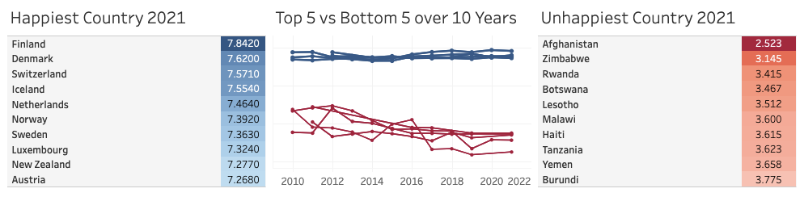
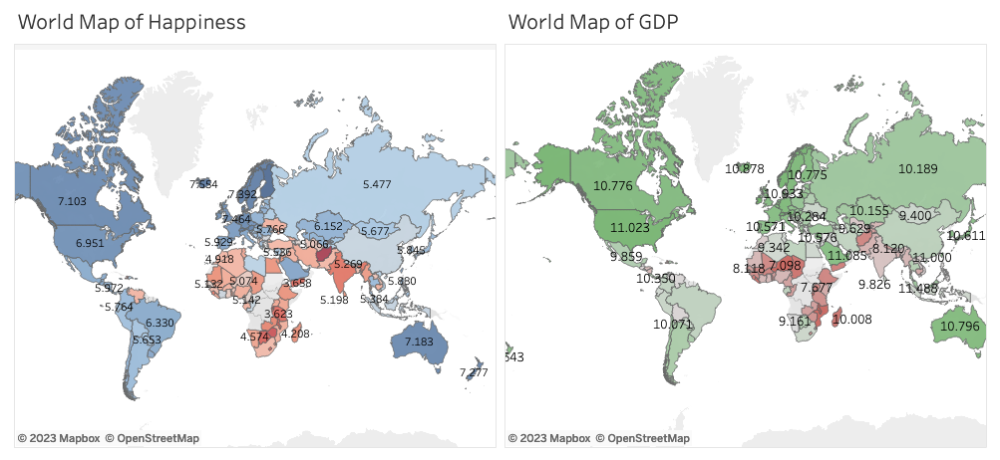
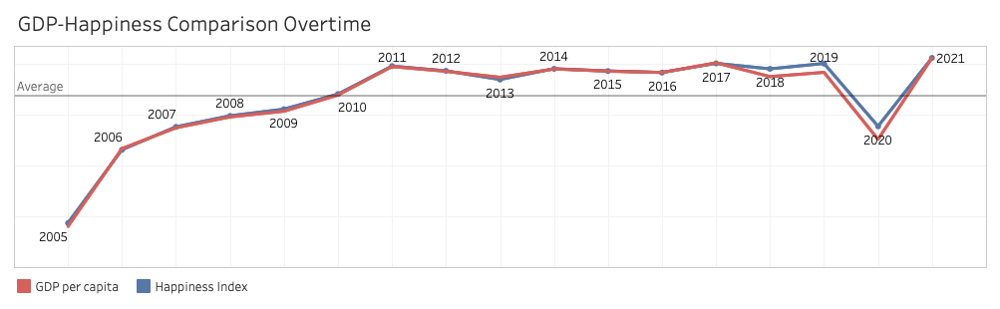
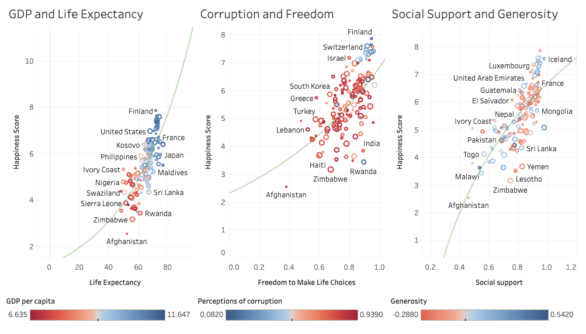

World Happiness Report 2021 Dashboard
The World Happiness Report is an annual publication by the United Nations that ranks the subjective well-being and happiness levels of citizens across 149 countries globally. The ranking utilizes survey data on how content and fulfilled residents view their own lives. The variables used in the methodology represent factors that research literature has shown to influence cross-country differences in self-reported life satisfaction. Each metric provides a population-weighted average score on a 0 to 10 scale that allows for tracking changes over time and contrasting across nations. In this dashboard, factors contributing to happiness scores among countries were investigated. There are six factors analyzed: GDP per capita, life expectancy, perception of corruption, freedom to make life choices, social support, and generosity.
Happiest and Unhappiest Country
Top 10 happiest countries were dominated by northern European countries while least happiest countries were African countries. Over the course of 10 years, there is no significant changes among of happines score the happiest countries. While among least happiest countries, the scores are declining.
The Relationship of GDP and Happiness
The comparison between map of happiness score and GDP per capita indicates strong correlation between happiness and GDP level. Countries with high GPD per capita tend to be happier.
From the graph above, both GDP and happiness score follow a similar trend. The 2020 drop is suspected due to the COVID-19 pandemic.
Other Contributing Factors
Life expectancy, perception of corruption, freedom to make life choice, and social support have positive correlation with happiness score. Only generosity factor has weaker correlation with happiness score, as show on the graph. It is worth to note that the perception of corruption is bad on >70% of the total world countries.
The Next Step
All the analysis were made solely based on the graph visualization. It is crucial to further analyze the data using proper statistical methods to gain more accurate and deeper understanding of the data. For a more detailed visualization of the data, please see the link below.
See project on Tableau